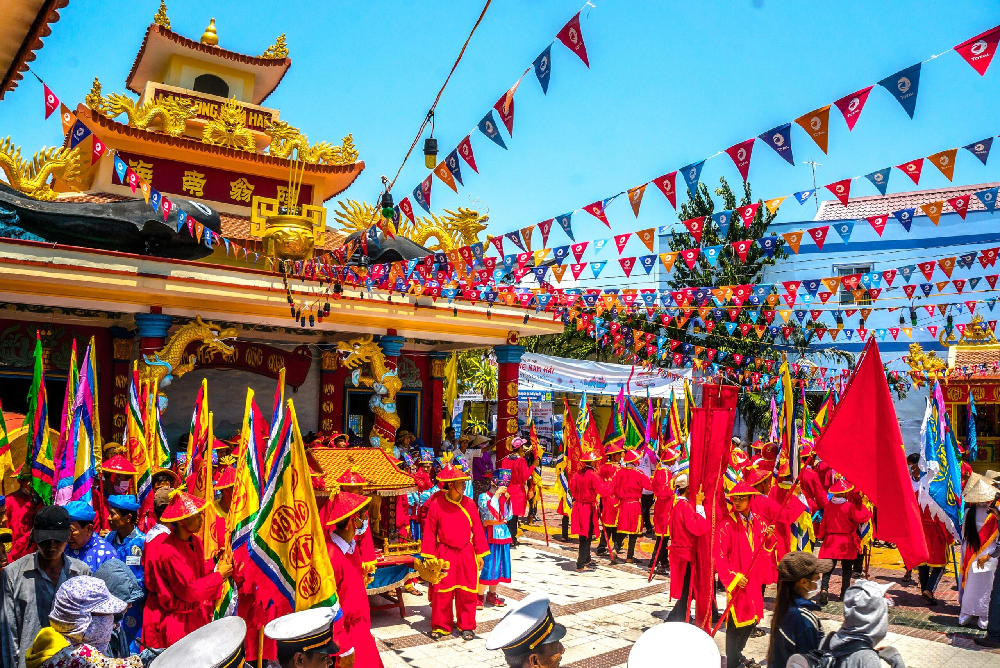

Lễ hội mang sắc màu rước lễ rực rỡ và tinh thần cầu cho mưa thuận gió hòa, đi lại bình an. Ẩn dưới vẻ náo nhiệt là niềm tin bền bỉ của cư dân gắn bó với sông nước và nghề chài lưới.
Nghinh Ông là lễ hội dân gian gắn với tín ngưỡng thờ cá Ông của cộng đồng ngư dân. Dù nguồn gốc thuộc văn hóa biển, khi hiện diện trong không gian sông nước Nam Bộ, lễ hội vẫn giữ được tinh thần cầu an, cầu thuận lợi rất gần gũi với đời sống cư dân vùng sông.
Điểm hấp dẫn của lễ hội nằm ở sự kết hợp giữa phần rước mang màu sắc thị giác mạnh và phần tâm linh chứa nhiều ý nghĩa. Đây là dịp để thấy rõ niềm tin dân gian vẫn sống động trong đời sống hiện đại như thế nào.

Phần rước tạo nên nhịp điệu thị giác mạnh và giúp lễ hội dễ gây ấn tượng ngay từ đầu.
Lễ hội phản ánh mong ước bình yên trên sông nước của người dân lao động.
Không khí lễ có sự hòa trộn đẹp giữa niềm tin tâm linh và sinh hoạt cộng đồng.
Nghinh Ông nổi bật vì vừa có sắc màu lễ hội dễ thấy, vừa có chiều sâu tín ngưỡng dễ cảm. Càng quan sát kỹ, bạn càng hiểu vì sao cư dân sông nước luôn giữ một mối liên hệ thiêng với tự nhiên.
Lễ hội cho thấy đời sống tinh thần của cư dân Nam Bộ luôn đi cùng môi trường sinh tồn của họ.
Đoàn rước, cờ phướn và chuyển động tập thể tạo nên bầu không khí rất đặc sắc.
Ngay cả du khách lần đầu tiếp xúc cũng dễ cảm được tinh thần của lễ hội này.
Bạn nên theo dõi cả phần rước lẫn không khí xung quanh để thấy lễ hội không chỉ là một nghi thức đơn lẻ.
Trước giờ rước, không khí háo hức của cộng đồng đã rất đáng để quan sát.
Đây là lúc màu sắc, biểu tượng và nhịp điệu lễ hội hiện ra rõ nhất.
Chính nét mặt và sự tập trung của cộng đồng giúp bạn cảm lễ hội chân thật hơn.
Khoảnh khắc sau cùng thường giúp bạn kết nối rõ phần hội với phần tâm linh.
Nếu bạn thấy website hữu ích, hãy ủng hộ một ly cà phê để nhóm có thêm động lực phát triển.
 Quét mã QR hoặc nhấn vào ảnh để ủng hộ.
Quét mã QR hoặc nhấn vào ảnh để ủng hộ.
Đánh giá từ du khách
Hãy chia sẻ cảm nhận của bạn về sắc màu lễ rước và chiều sâu tín ngưỡng của Nghinh Ông nhé.